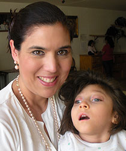

Ways To Give
Donate |
Advocate |
|
Tell your friends, collegues, and family about the work we are doing |

Therapy, Education, and Good Will: Giving voice to the abandoned and disabled
On one of her many trips to Guadalajara,Mexico, California native and seasoned speech pathologist Margarita Fajardo, had a life-altering experience when she visited an orphanage and met a young girl named Conchita. Conchita, born with cerebral palsy, was abandoned at the city dump. Fortunately a garbage collector found her and she was then given a home along with 19 other disabled children and young adults at a home called, " Bienaventurados de Jesus. " The following year Margarita returned bringing with her more therapists and equipment to help improve the lives of all the children there by enhancing their communication skills and thus, Children of Mexico International was created.
Children of Mexico International is committed to enhancing the lives of children and young adults by sharing evidence-based communication techniques, therapy materials and equipment, education and research to those with a need. Children of Mexico International currently serves children in an orphanage in Guadalajara, and at a central location in Cotija, Mexico. In Guadalajara, augmentative and alternative communication (AAC) techniques are emphasized and in Cotija, hippotherapy, (the practice of using the therapeutic movement of the horse to strengthen core muscles and improve balance), is one of the strategies being used.
What we do...
We are a non-profit organization providing direct therapy, education, and training to disabled children and young adults living in orphanages throughout Latin America. Many of these children have limited communication skills due to a variety of disorders including cerebral palsy, autism, birth defects, and other neurological disorders.
Children of Mexico brings together teams of skilled professionals, students, and volunteers to help disenfranchised, forgotten, and needy children who otherwise might not receive intervention. Additionally, we train staff, provide presentations for families and professionals with the goal of improving communication skills and enhancing lives.
↑
1. Guadalajara/Ajijic, Jalisco: |
June 22 - June 30, 2014 |
2. Cotija, Michoacan: |
Cancelled |
Access our online application here
Please contact Margarita Fajardo regarding any safety related questions.Telephone: (650) 784-6092
Thorough itenerary to be posted in the following weeks.
This is a volunteer opportunity for speech pathologists, physical therapists, occupational therapists, nurses, and educators.
↑
Donate |
Advocate |
|
Tell your friends, collegues, and family about the work we are doing |
Our volunteers range from monolingual English speakers to monolingual Spanish speakers and everything in between. We arrange teams of volunteers to accommodate the different levels of Spanish. While Mexico is a Catholic country and we attend mass in Cotija, our volunteers have been primarily non-Catholic. Volunteers have been both professionals and students in the fields of education, speech pathology, physical therapy, occupational therapy, and nursing. We welcome anyone who might have something to contribute to the lives of the children and professionals with whom we work in Mexico.
↑In Guadalajara, we work at an orphanage where the children’s ages range from toddlers through adults, most of whom have severe cerebral palsy and spend much of their time in bed. We spend 3-4 hours per day at the orphanage, doing therapy with the children. Beyond that, volunteers have free time to sightsee, plan therapy activities, or spend more time helping the volunteer caregivers at the orphanage with the children’s daily routines. We have a party for the children on the last day so volunteers are encouraged to bring party ideas, favors, and/or small gifts.
In Cotija, we perform hippotherapy in which the students are on horseback, traditional speech and language therapy, and we offer group presentations to parents and teachers from Cotija and surrounding towns. Students range in age from toddler to adult, with a variety of disorders, some of which may not have been diagnosed. The number of students attending is unpredictable, but we had approximately 80 students from surrounding towns in summer 2009. Volunteers work from 9:00am until approximately 4:00pm. Evenings are spent helping each other prepare presentations or therapy, programming AAC devices, or relaxing and having “cena.” Volunteers are asked to let us know in advance if they would like to present to parents or teachers, work with horses, perform therapy, and/or assess the students, or entertain children while they wait for therapy.
Bring materials you would like to use for a variety of therapy. If you can copy or donate materials to the local teachers and parents for use once we leave, that is even better. Bring stickers, bubbles, candy, small toys, school supplies and/or backpacks to give to students. Children of Mexico Intl. keeps materials at the Guadalajara site for use at the orphanage. All sizes of clothing in good condition is also desirable to donate in both cities.
Bring personal items such as an umbrella, guidebook, backpack to carry materials from our hotel to our work sites, and a laptop for creating materials or making presentations.
Please dress conservatively and professionally during daily interactions with students, parents, and teachers. In Guadalajara, slacks and shirts with sleeves are appropriate. In Cotija, jeans may also be appropriate if working with horses. Please no short skirts, shorts, or tank tops. Bring at least one dressy outfit (dress or nice pants) for the fundraising dinner in Guadalajara and/or mass in Cotija. In the past, some volunteers have brought clothes to wear that they were planning to get rid of anyway. At the end of the time in Mexico, these clothes are donated to locals. There are laundries in Cotija that will wash and dry your clothes for you in less than a day. We have Children of Mexico Intl. shirts for purchase that are appropriate for wear while working. These are optional. It often rains in the afternoons in both areas so a raincoat is useful.
In Guadalajara, we stay at the Country Plaza Inn in Zapopan. It is approximately a 20 minute walk or a 5 minute taxi ride to the orphanage. There is a restaurant in the hotel and there are many others close by. It is a 10 minute walk to the main plaza and market of Zapopan. It is also a 10 minute walk to Plaza Patria, a shopping mall with all necessities.In Cotija, we are hosted by the local diocese and stay in one of the hotels in town to be determined by our hosts. Local adult participants provide the afternoon “comida” for everyone. The evening “cena” is provided by church volunteers at the rectory for our volunteers. Cotija is a small town and all necessities are within an easy walk of the hotel.
↑Phone calls to the United States are expensive and sometimes difficult to make. It is recommended that volunteers plan on using skype or email to communicate, although the internet can be slow.
Pharmacies are conveniently located in both areas, but it is recommended that you come with medications in case of emergency. The Clínica San Francisco next to Plaza Patria in Guadalajara provides excellent, inexpensive care in case of emergency. Emergency information cards will be given to all volunteers.
↑Michoacan is a large state and the Cotija area is distant from problem areas. Common sense and precautions are taken to be safe and not to travel on rural highways after dark. Guadalajara is a relatively safe city, but traffic is heavy and pedestrians DO NOT have the right of way when crossing streets in Mexico. Please use caution when doing so.
Enough to cover meals in Guadalajara, hotels (price to be determined), taxis in Guadalajara (approx. $6.00) round trip per taxi to the orphanage, approx. $10.00 round trip to downtown), excess for sightseeing, museum and concert entry fees if desired.
↑This page is under construction
↑
Children of Mexico International
Margarita Fajardo
524 Hemlock Avenue
South San Francisco, CA 94080
Email: childrenofmex@gmail.com
Connect with us on our Facebook Group
Connect with us on our Google+ Page
↑
"Do not do things for yourself alone, but for others also; do not desire to dedicate yourself only, but desire that others dedicate themselves as well; do not seek affection for yourself, but, as a stone thrown into the water sends out continuous ripples in every widening circles, urge others to open wide the circle of their affection to include their neighbors.''
- Francis Xavier Nguyen Van Thuan.
{kind=link}
{kind=link}
{kind=link}